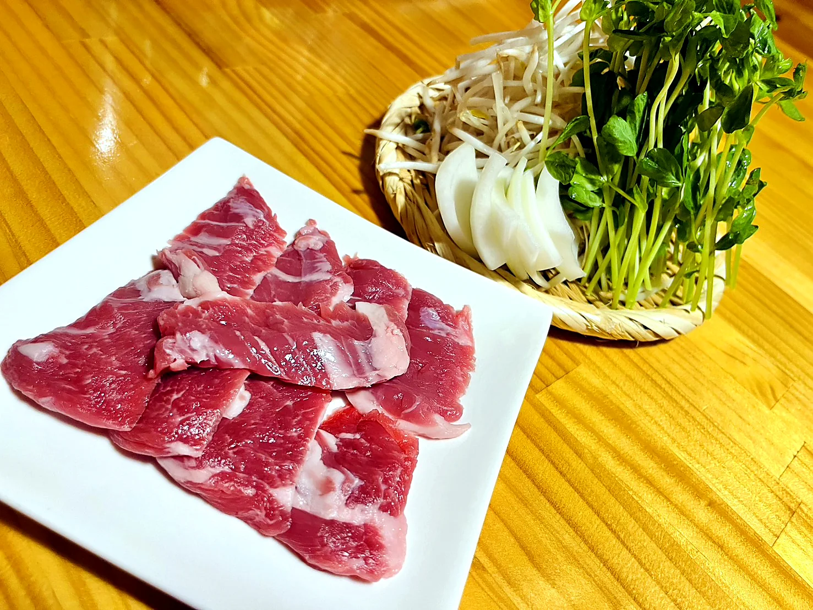
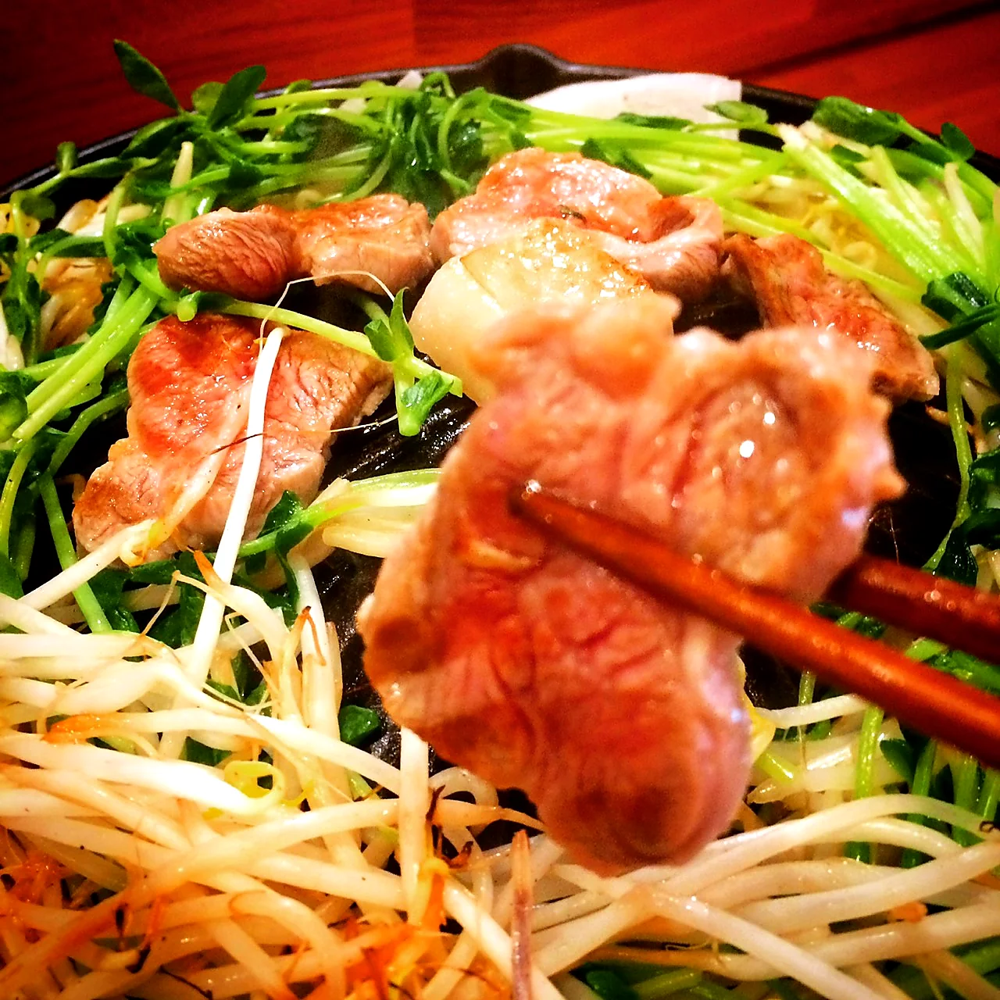
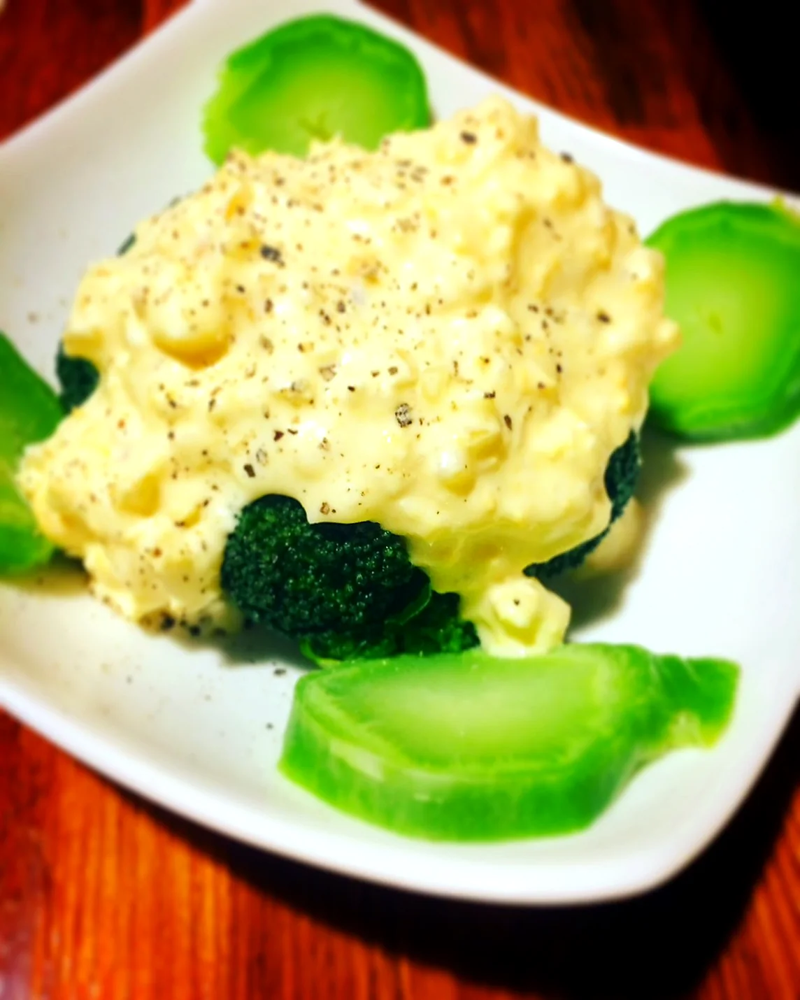
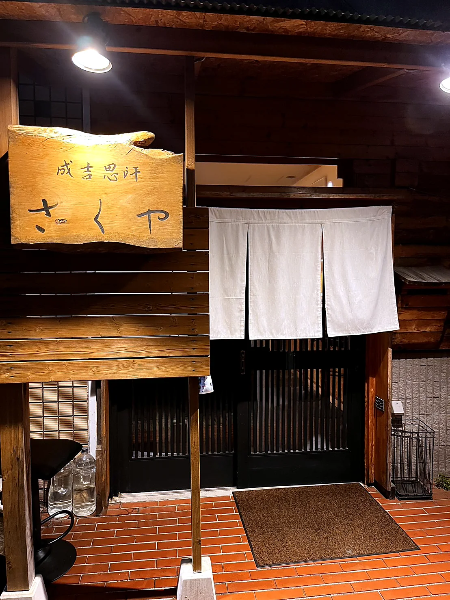
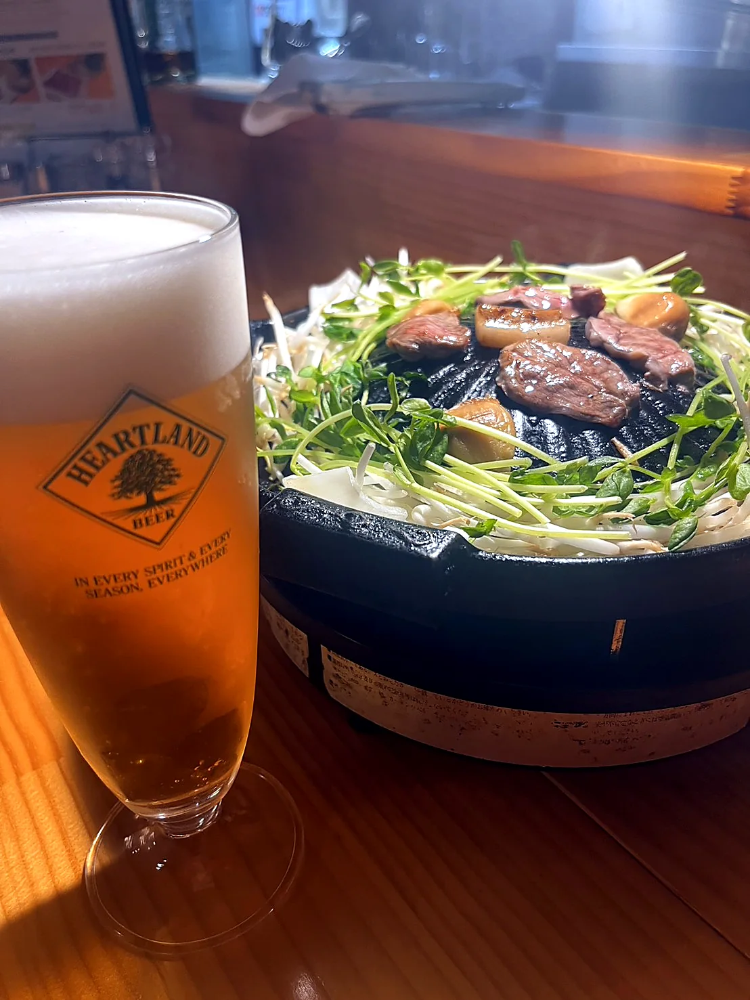
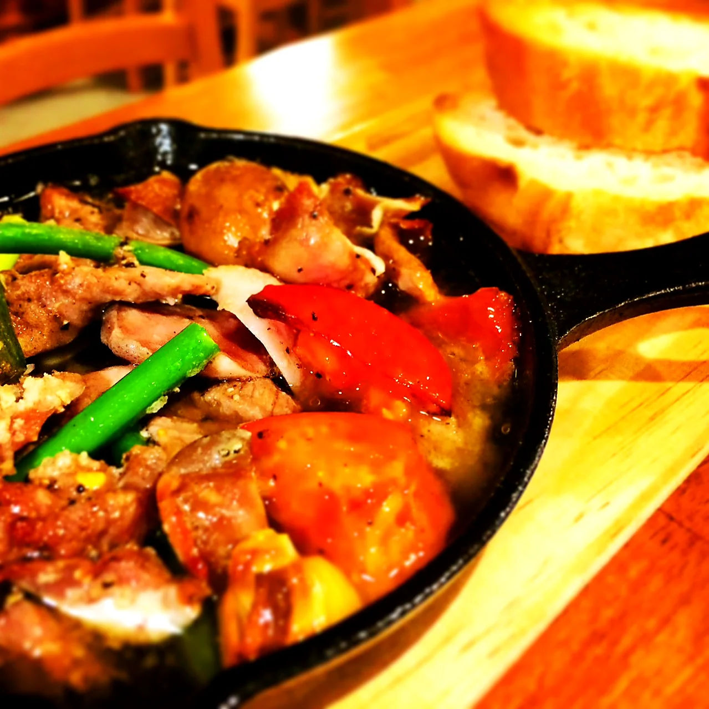

ジンギスカンセット
肉皿と野菜盛りで楽しむ、さくやの定番。
Concept
一般的なジンギスカンの印象を、静かに覆す一皿を。
成吉思汗 さくやが大切にしているのは、羊肉独特の臭みを抑えた食べやすさと、生ラムならではの柔らかさ。香りは穏やかに、旨みは深く。肩肘張らず、それでいて上質な時間を過ごせる隠れ家のような一軒です。

Fresh Lamb
高タンパクで低脂肪なラムを、食べやすさまで考えてご用意しています。焼き上がりは軽やかで、野菜の甘みと重なるほどに、生ラムの旨みがすっと際立ちます。
Recommended
詳細を並べすぎず、さくやらしさが伝わる代表的な品を。
肉皿と野菜盛りで楽しむ、さくやの定番。

香ばしさと柔らかさが重なる、主役の一皿。

食事の流れを静かに整える、軽やかな料理も。
Interior
木目調の外観と、生成りのやわらかな気配。友人との食事はもちろん、夫婦やカップル、会食にも使いやすい静かな空気を大切にしています。

焼き上がりの香ばしさ、店内の明かり、日々のおすすめ。さくやの今の空気をInstagramでもお届けしています。


Reservation
お電話、Instagram DM、メールにて承ります。